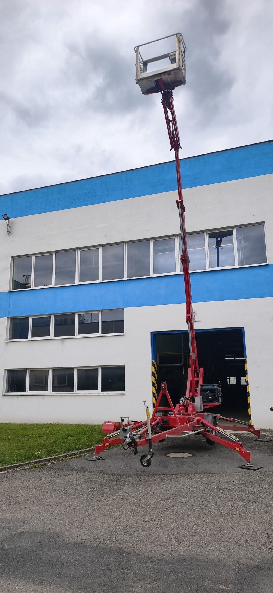
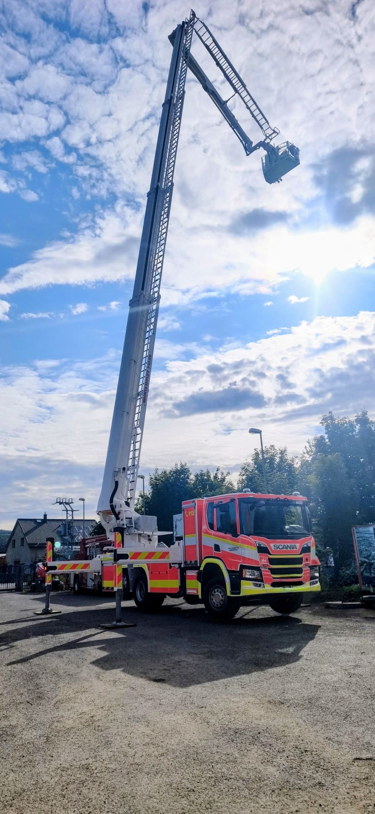
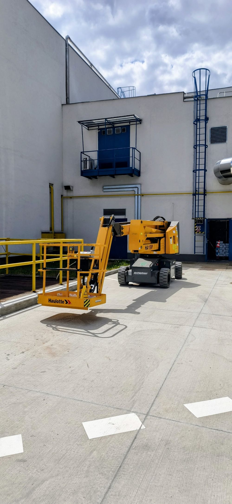
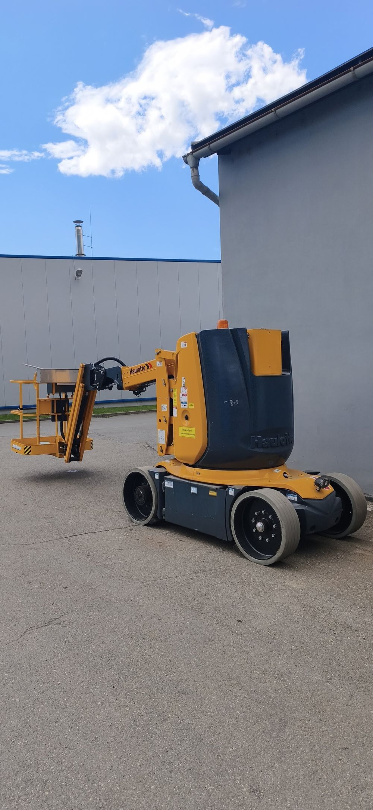
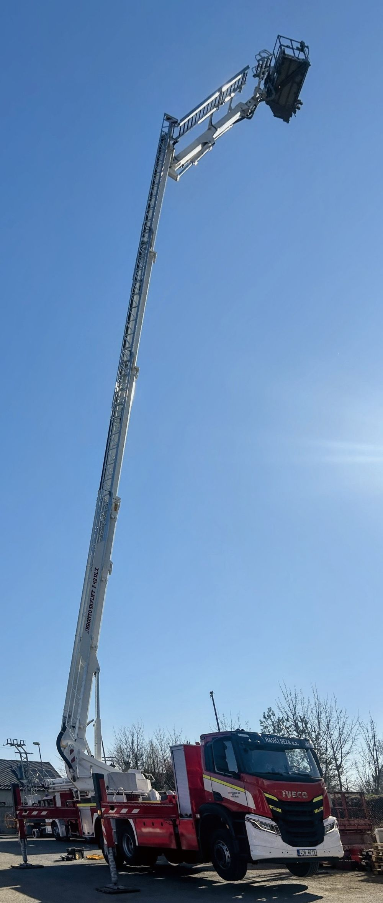
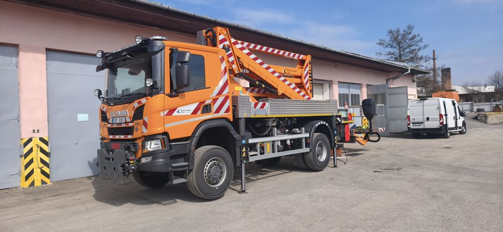

Provádím revize a revizní zkoušky pojízdných zdvihacích pracovních plošin (PZPP) skupiny B a B1 dle platné legislativy — rychle, na místě a s dokumentací, která obstojí při kontrole.
Jsem certifikovaný revizní technik vyhrazených zdvihacích zařízení se zaměřením na pojízdné pracovní plošiny. Revize provádím jako OSVČ, převážně ve spolupráci se servisní organizací ROTHLEHNER pracovní plošiny s.r.o., a to i samostatně pro další klienty — vždy s důrazem na to, aby dokumentace byla v pořádku a stroj byl bezpečný k provozu.
Součástí mé práce jsou i vlastní revizní samolepky se štítkem stroje a otočným ciferníkem příští revize — díky nim máte termín kontroly na první pohled přímo na stroji.
Od pravidelné revize po kompletní dokumentaci a označení stroje.
Pravidelné revize pojízdných zdvihacích pracovních plošin skupiny B, B1 dle NV 193/2022 Sb.
Kompletní dokumentace k revizi, platná při kontrole a v souladu s legislativou.
Konzultace k bezpečnému provozu, servisním intervalům a technickému stavu strojů.
Hlídání a připomínání termínů příští revize, ať vám žádná nepropadne.
Štítek s ciferníkem příští revize — součást každé provedené revize.
Revize provádím přímo u vás — na stavbě, ve skladu nebo v areálu firmy.
Zaškolení obsluhy pracovní plošiny dle domluvy, včetně vystavení průkazu.
Přesná cena se odvíjí od typu, výšky a počtu strojů. Konečnou nabídku vždy potvrdím předem.
| Služba | Popis | Cena |
|---|---|---|
| Vystavení revizní zprávy | Kompletní dokumentace k revizi, za stroj | 1 500 Kč |
| Práce technika na místě | Samotná revize plošiny, sazba za hodinu | 800 Kč / hod |
| Doprava | Dle vzdálenosti od místa výkonu | na vyžádání |
| Více strojů / stálý klient | Opakovaná spolupráce, více plošin najednou | sleva domluvou |
| Školení obsluhy plošiny | Zaškolení obsluhy, rozsah dle domluvy | dle domluvy |
| Vystavení průkazu obsluhy | Za jeden průkaz | 200 Kč |
Ukázka strojů, u kterých jsem provedl revizi.






Nejčastěji jezdím po Moravskoslezském, Olomouckém a Zlínském kraji. Na delší vzdálenosti se domluvíme individuálně.
Ozvěte se telefonicky nebo e-mailem — odpovím obratem a domluvíme termín revize.
Napište mi typ stroje, počet kusů a přibližný termín — do druhého dne se ozvu s nabídkou.
Napsat e-mail